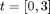
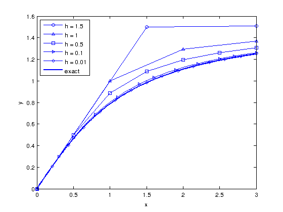
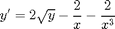
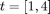
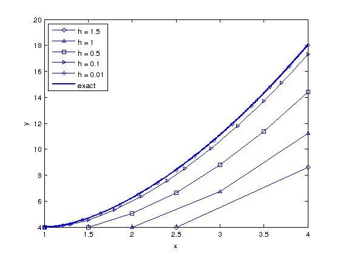
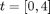
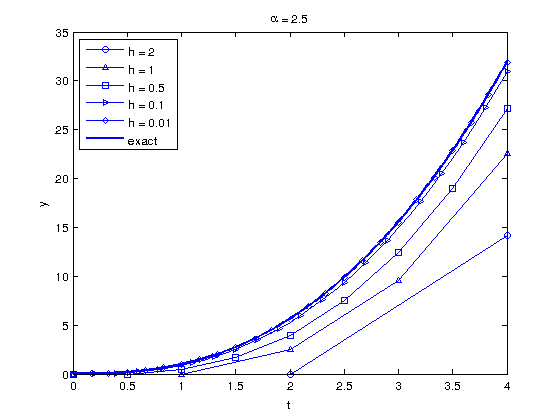
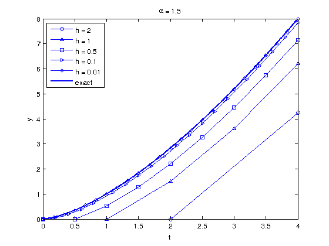
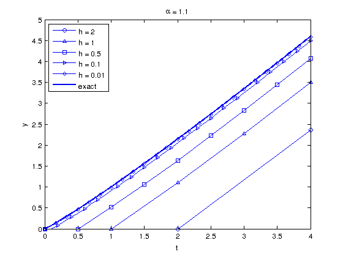

Math 340 - Lab #12
Contents
Assignment due Thursday 2pm
Use your Euler method code form lab #11 to solve the HW problems:
#1
Section 8.2 p. 384 #1 a) as in HW file (for handin to Prof. Bukiet you should start with y(0) and use step size h=1 to get y(3)).
For the lab: Plot your solutions for

with on the same axes with the exact solution. Comment on your results!clear all; clc f = @(x,y) (cos(y)).^2; h = [1.5, 1, 0.5, 0.1, 0.01 ]; Markers = ['o' '^' 's' '>' 'd']; figure(1) hold on for i = 1: length(h) [x, y ] = euler2(f, 0, 0, h(i), 3 ); line_fewer_markers(x,y, 3*i,Markers(i),'MarkerFaceColor','none','MarkerSize',5); end plot(x, atan(x),'LineWidth',2) legend('h = 1.5', 'h = 1', 'h = 0.5', 'h = 0.1', 'h = 0.01', 'exact') xlabel('x'), ylabel('y') legend('Location', 'NW') box on

#2
From the HW file the next problem (not in text)

(for handing in to Prof. Bukiet you should start with y(1) and use step size h=1 to get y(4))
For the lab: Plot your solutions for

with on the same axes with the exact solution. Comment on your results!clear all; clc f = @(x,y) 2.*sqrt(y) - 2./x - 2./x.^3; h = [1.5, 1, 0.5, 0.1, 0.01 ]; Markers = ['o' '^' 's' '>' 'd']; figure(2) hold on for i = 1: length(h) [x, y ] = euler2(f, 1, 4, h(i), 4 ); line_fewer_markers(x,y, 3*i,Markers(i),'MarkerFaceColor','none','MarkerSize',5); end plot(x, (x + 1./x).^2,'LineWidth',2) legend('h = 1.5', 'h = 1', 'h = 0.5', 'h = 0.1', 'h = 0.01', 'exact') xlabel('x'), ylabel('y') legend('Location', 'NW') box on

#3
Section 8.3 number 6
For the lab: Plot your solutions for

with on the same axes with the exact solution. Comment on your results!% clear all; clc h = [2, 1, 0.5, 0.1, 0.01 ]; Markers = ['o' '^' 's' '>' 'd']; alpha = [2.5, 1.5, 1.1]; for j = 1:length(alpha) f = @(x,y) alpha(j).*x.^(alpha(j) - 1); figure(j+2) hold on for i = 1: length(h) [x, y ] = euler2(f, 0, 0, h(i), 4 ); line_fewer_markers(x,y, 5*i,Markers(i),'MarkerFaceColor','none','MarkerSize',5); end plot(x,x.^alpha(j) ,'LineWidth',2) legend('h = 2', 'h = 1', 'h = 0.5', 'h = 0.1', 'h = 0.01', 'exact') xlabel('t'), ylabel('y') legend('Location', 'NW') name = ['\alpha = ',num2str(alpha(j))]; title(name) box on end


